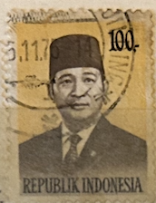
| SOURCE | TITLE| IMAGE MATCH | click to source page |
| Alamy | INDONESIA - CIRCA 1974: A stamp printed in Indonesia shows the president of Indonesia, Suharto, circa 1974 Stock Photo - Alamy |  |
| HipStamp | Indonesia SC#1259 50 Rp President Suharto (1986) Used/Crease | Asia - Indonesia, General Issue Stamp / HipStamp | 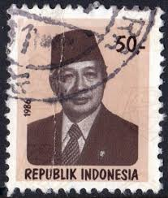 |
| eBay | Green Indonesian Stamps for sale | eBay | 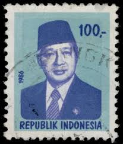 |
| Alamy | MOSCOW, RUSSIA - NOVEMBER 4, 2019: Postage stamp printed in Indonesia shows President Suharto, 1974-1976 serie, 40 Rp - Indonesian rupiah, circa 1974 Stock Photo - Alamy | 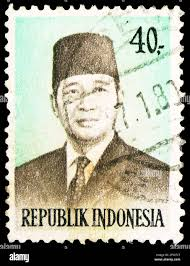 |
| eBay | Indonesia - Indonesie Issue 1983 (1146) President Soeharto | eBay | 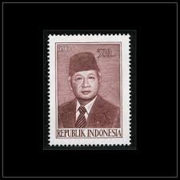 |
| Shutterstock | Pasuruan Indonesia August 29 2025 Stamp Stock Photo 2679971279 | Shutterstock | 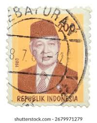 |
| PicClick IT | INDONESIA - INDONESIA - 1965 - Serie ordinaria. Presidente Sukarno - CONEFO EUR 1,00 - PicClick IT | 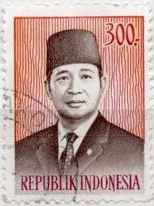 |
| Shutterstock | April 26 2025 Jakarta Indonesia Postage Stock Photo 2628650907 | Shutterstock | 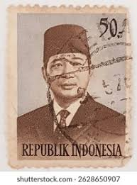 |
| Wikimedia.org | File:Stamp of Indonesia - 1976 - Colnect 258341 - President Suharto.jpeg - Wikimedia Commons | 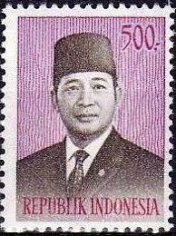 |
| ebid.net | INDONESIA, President Suharto, blue 1976, 200Rp, #2 on eBid United States | 215563910 |  |
| Stamp Collecting Blog | Many faces of Indonesian Suharto definitive postage stamps of 1980/1987 (or quick peek into world of various meshes and screens in photogravure printing) |  |
| Dreamstime.com | El Sello De La Imagen Impresa En Indonesia Muestra Al Presidente Suharto, Serie 1974-1976, 50 Rp - Rupia Indonesia, Alrededor De Imagen de archivo editorial - Imagen de sello, correo: 170586279 | 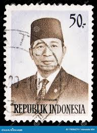 |
| 300 Indonesia stamps 및 우표 아이디어 찾기 | 동남아시아, 미로, 파충류 등 |  | |
| Alamy | INDONESIA - CIRCA 1986: A stamp printed in Indonesia shows President Sukarno (1901-1970), circa 1986 Stock Photo - Alamy | 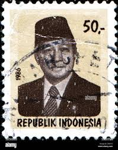 |
| Dreamstime.com | 343 Indonesia Stamps Stock Photos - Free & Royalty-Free Stock Photos from Dreamstime | 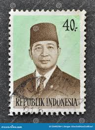 |
| Shutterstock | 3+ Hundred President Soeharto Royalty-Free Images, Stock Photos & Pictures | Shutterstock | 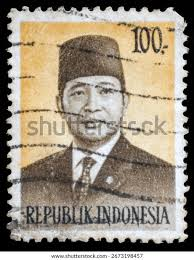 |
| Colnect | Indonesia : Stamps [Series: President Suharto] [1/4] : Colnect 📮 | 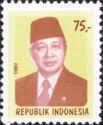 |
| iStock | Suharto Stamp Stock Photo - Download Image Now - Adult, Adults Only, Asia - iStock | 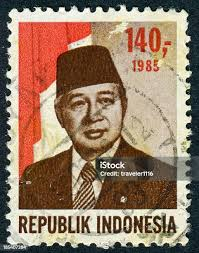 |
| Haanderik.nl | Indonesië 1974 Frankeerzegels President Soeharto gestempeld Michel 794 | 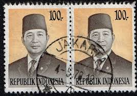 |
| Shutterstock | 546 Soeharto 免版税图片、库存照片和图像| Shutterstock | 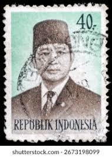 |
| Shutterstock | April 26 2025 Jakarta Indonesia Postage Stock Photo 2628651067 | Shutterstock | 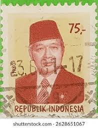 |
| Shutterstock | 26. april 2025 - Jakarta, Indonesien: Stock-foto 2628650481 | Shutterstock | 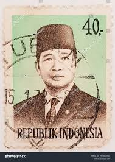 |
| Shutterstock | Pasuruan Indonesia August 29 2025 Stamp Stock Photo 2678680641 | Shutterstock |  |
| Shutterstock | Pasuruan Indonesia August 29 2025 Stamp Stock Photo 2682603503 | Shutterstock | 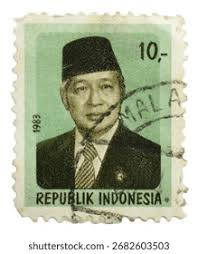 |
| Dreamstime.com | INDONESIA POPULARIDAD DE SUHARTO Imagen editorial - Imagen: 50365635 | 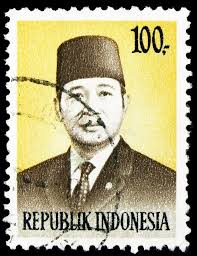 |
| Shutterstock | 576 苏哈托免版税图片、库存照片和图像| Shutterstock | 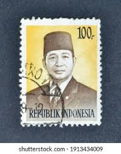 |
| Shutterstock | 6+ Hundred February 1986 Royalty-Free Images, Stock Photos & Pictures | Shutterstock | 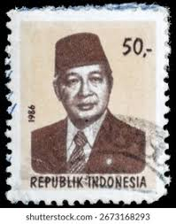 |
| Dreamstime.com | Postage Stamp Printed in Indonesia Shows President Suharto, 400 Rp - Indonesian Rupiah, Serie, Circa 1981 Editorial Photography - Image of russia, postmark: 163298107 | 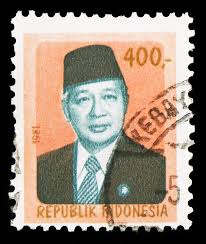 |
| Dreamstime.com | 1,230 Indonesia Circa Stock Photos - Free & Royalty-Free Stock Photos from Dreamstime | 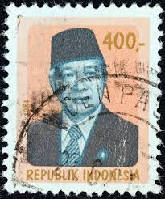 |
| Dreamstime.com | Postage Stamp Printed in Indonesia Shows President Suharto, 200 Rp - Indonesian Rupiah, Serie, Circa 1989 Editorial Photo - Image of 1989, state: 164637456 |  |
| Bob Shop | Indonesia - 1974 - Indonesia - Postmark Jakarta - Pair - 75c - President Sukarno was listed for 0.00 on 18 Aug at 20:01 by Mantique in Pretoria / Tshwane (ID:621962987) | 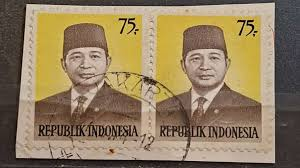 |
| Shutterstock | Indonesia-circa 1986a Stamp Printed Indonesia Shows Stock Photo 69921973 | Shutterstock | 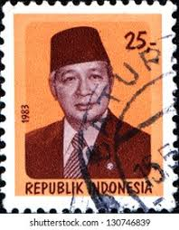 |
| BidCurios | 1997 Germany 110 pf "Saar-Lor-Lux European Region" MNH Stamp - BidCurios |  |
| Dreamstime.com | Postage Stamp Printed in Indonesia with Portrait Image of Suharto the Indonesian Second President, Circa 1982 Editorial Stock Image - Illustration of circa, stamp: 226206074 | 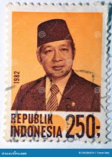 |
| PICRYL | Mohammad Hatta 2002 Indonesia stamp3 - PICRYL - Public Domain Media Search Engine Public Domain Search | 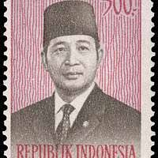 |
| Shutterstock | Depok, Indonesien - 28. februar 2025 Stock-foto 2673170011 | Shutterstock | 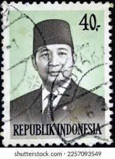 |
| Shutterstock | Depok Indonesia February 28 2025 Soeharto Stock Photo 2673168147 | Shutterstock | 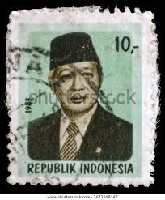 |
| Alamy | INDONESIA - CIRCA 1980: A stamp printed in Indonesia shows Pelita, circa 1980 Stock Photo - Alamy |  |
| Alamy | INDONESIA - CIRCA 1990: a stamp printed in Indonesia shows traditional wedding attire from Central Java, circa 1990 Stock Photo - Alamy | 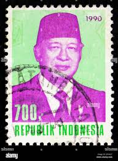 |
| Shutterstock | Suharto: Over 414 Royalty-Free Licensable Stock Photos | Shutterstock | 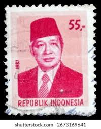 |
| 120 ide Filateli Art untuk disimpan hari ini | perangko, airedale terrier, sejarah inggris, dan lainnya | 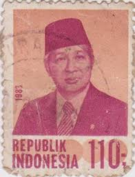 | |
| Shutterstock | 5+ Hundred Soeharto Royalty-Free Images, Stock Photos & Pictures | Shutterstock | 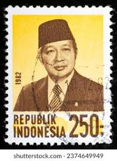 |
| Dreamstime.com | Postage Stamp Printed in Indonesia Shows President Suharto, 100 Rp - Indonesian Rupiah, Serie, Circa 1980 Editorial Photo - Image of heritage, retro: 161857061 | 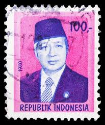 |
| Shutterstock | April 26 2025 Jakarta Indonesia Postage Stock Photo 2628651031 | Shutterstock | 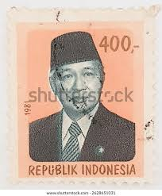 |
| Alamy | INDONESIA - CIRCA 1996: a stamp printed in Indonesia shows Suharto was an Indonesian military leader and politician who served as the second President Stock Photo - Alamy | 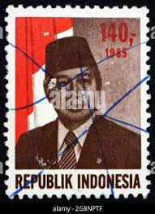 |
| Dreamstime.com | Postage Stamp Printed in Indonesia Shows President Suharto, Serie, 350 Rp - Indonesian Rupiah, Circa 1985 Editorial Photography - Image of portrait, postal: 168082532 |  |
| Alamy | MOSCOW, RUSSIA - SEPTEMBER 22, 2019: Postage stamp printed in Indonesia shows President Suharto, serie, circa 1980 Stock Photo - Alamy | 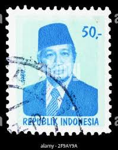 |
| Dreamstime | Suharto Series Stock Photos - Free & Royalty-Free Stock Photos from Dreamstime | 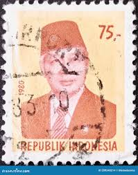 |
| Shutterstock | Moscow Russia September 27 2019 Postage Stock Photo 1553361377 | Shutterstock | 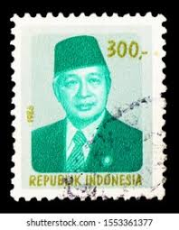 |
| eBay | Indonesia 1951 100 sen Achmed Sukarno Conefo Used x2 postal stamps block | eBay | 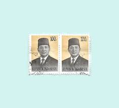 |
| eBay | Indonesia - Indonesie Issue 1988 (1342) President Soeharto | eBay | 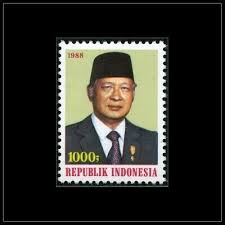 |
| Dreamstime.com | 907 Postage Stamp Indonesia Stock Photos - Free & Royalty-Free Stock Photos from Dreamstime |  |
| Shutterstock | Depok Indonesia February 28 2025 Soeharto Stock Photo 2673193815 | Shutterstock | 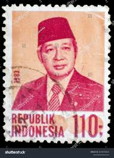 |
| eBay | Politicians Postage Indonesian Stamps for sale | eBay | 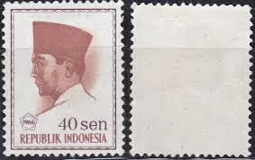 |
| Alamy | INDONESIA - CIRCA 1966: A stamp printed in Indonesia, shows President Sukarno by Basuki Abdullah, circa 1966 Stock Photo - Alamy | 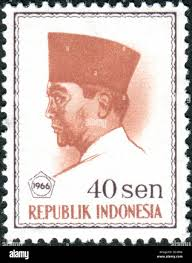 |
| turkeconom.com | Democratic Growth: The Evolution of Indonesia's Democracy – Real Stories from the Inside - Turkeconom | 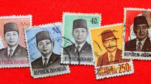 |
| Dreamstime.com | INDONESIA - CIRCA 1949: a Stamp Printed in Indonesia Shows Map of Indonesia, Circa 1949. Editorial Photo - Image of chart, hobby: 155837236 | 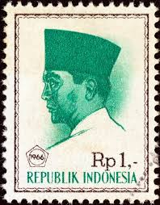 |
| eBay | Indonesia 1951 50 sen Achmed Sukarno Conefo Used postal stamp | eBay | 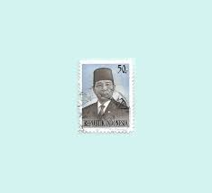 |
| ebid.net | MALTA, San Gwann Bosco, pink 1988, 10c on eBid Asia | 194272027 | 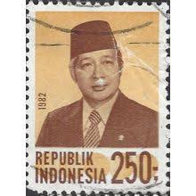 |
| Colnect | Indonesia : Stamps [Year: 1966] [1/9] : Colnect 📮 |
{kind=link}